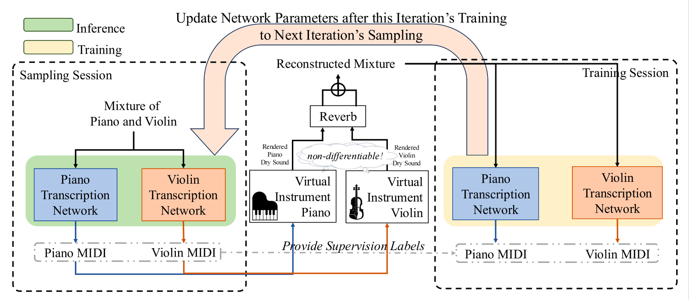

Most existing source separation methods rely on end-to-end supervised training. Such schemes lack intermediate representations, limiting downstream applications. Besides, direct waveform-domain predictions may introduce artifacts and require labor-intensive stem annotations. To overcome these, we propose MIDI-in-the-Loop (MiL), a self-supervised MSS method for piano-violin scenarios based on an analysis-by-synthesis framework. Specifically, the analysis stage transcribes the mixture into instrument-specific MIDI sequences, while the synthesis stage renders each MIDI sequence into its corresponding audio source using a virtual instrument. Since virtual instruments are non-differentiable during training process, we further propose a training method utilizing iterative sampling-and-training procedure. To evaluate MiL, we construct a piano-violin dataset and conduct experiments. Results show that MiL achieves performance comparable to supervised benchmarks on certain metrics while substantially outperforming unsupervised matrix-factorization baselines.

Classic unsupervised source separation baseline based on non-negative matrix factorization.
Results trained only on the provided dataset for 1000 epochs. Since the source instruments of training and test data differ greatly in timbre and phase, single-channel was used for both training and inference.
Our self-supervised training does not use original source stems or manually annotated MIDI data.
Classic unsupervised source separation baseline based on non-negative matrix factorization.
Results trained only on the provided dataset for 1000 epochs. Since the source instruments of training and test data differ greatly in timbre and phase, single-channel was used for both training and inference.
Our self-supervised training does not use original source stems or manually annotated MIDI data.